리눅스마스터-2급 (2019-06-15 기출문제)
1과목: 리눅스 운영 및 관리
1. 다음 중 설정된 umask의 값이 0022일 때 생성되는 파일의 허가권 값으로 알맞은 것은?
- -rw-r--r--
- -rw-rw-r--
- -rwxr-xr-x
- -rwxrwxr-x
(정답률: 67%)

2. 다음 중 ihduser 사용자의 홈 디렉터리 총 사용량을 단위를 붙여서 출력하는 명령으로 알맞은 것은?
- df -hT ~ihduser
- df -sh ~ihduser
- du -hT ~ihduser
- du -sh ~ihduser
(정답률: 59%)
3. 다음 중 삼바 파일 시스템을 마운트 할 때 지정하는 유형 값으로 알맞은 것은?
- nfs
- udf
- cifs
- iso9660
(정답률: 66%)
4. 다음 중 사용자에 대한 쿼터를 설정할 때 사용하는 명령으로 알맞은 것은?
- quota
- edquota
- repquota
- quotacheck
(정답률: 79%)
5. 다음 중 리눅스에서 사용 가능한 파일시스템을 생성하는 명령으로 틀린 것은?
- mke2fs /dev/sdb1
- mke2fs -j /dev/sdb
- mke2fs -t ext4 /dev/sdb1
- mke2fs -j ext4 /dev/sdb1
(정답률: 60%)
6. 다음 중 aquota.user와 같은 쿼터 기록 파일을 생성하는 명령으로 알맞은 것은?
- edquota
- setquota
- repquota
- quotacheck
(정답률: 47%)
7. 다음 명령을 실행했을 경우 /project 디렉터리의 허가권 값으로 알맞은 것은?
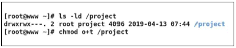
- drwxrwx--t
- drwxrwx--T
- drwxrws--t
- drwxrws--T
(정답률: 56%)
8. 다음 조건에 해당하는 명령으로 알맞은 것은?
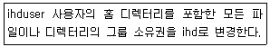
- chgrp -r ihd ihduser
- chgrp -R ihd ihduser
- chgrp -r ihd ~ihduser
- chgrp -R ihd ~ihduser
(정답률: 51%)
9. 다음 중 /home 영역을 다시 마운트 하는 명령으로 알맞은 것은?
- mount -o re /home
- mount -t re /home
- mount -o remount /home
- mount -t remount /home
(정답률: 65%)
10. 다음 중 생성할 수 있는 파일의 크기가 가장 큰파일 시스템으로 알맞은 것은?
- XFS
- ext2
- ext3
- ext4
(정답률: 73%)
11. 다음 중 사용자가 로그아웃할 때 실행할 명령을 등록하는 파일로 알맞은 것은?
- ~/.bash_profile
- ~/.bash_logout
- ~/.bashrc_logout
- ~/.bash_exit
(정답률: 62%)
12. 다음 중 최근에 실행한 명령어 10개를 확인하는 명령으로 알맞은 것은?(오류 신고가 접수된 문제입니다. 반드시 정답과 해설을 확인하시기 바랍니다.)
- !10
- ! 10
- ! -10
- history 10
(정답률: 75%)
13. 다음 중 가장 먼저 개발된 셸로 알맞은 것은?
- 본셸
- 배시셸
- C셸
- 콘셸
(정답률: 80%)
14. 다음 중 리눅스의 표준 셸로 알맞은 것은?
- csh
- ksh
- bash
- tcsh
(정답률: 88%)
15. 다음 ( 괄호 ) 안에 들어갈 파일명으로 알맞은 것은?
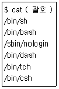
- /etc/profile
- /etc/bashrc
- /etc/chsh
- /etc/shells
(정답률: 79%)
16. 다음 중 ihduser 사용자가 로그인 직후에 부여 받은 셸을 확인하는 방법으로 틀린 것은?
- echo $SHELL
- grep ihduser /etc/passwd
- env | grep SHELL
- chsh -l
(정답률: 59%)
17. 다음 작업에 해당하는 명령으로 알맞은 것은?
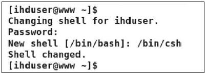
- chfn
- chsh
- chmod
- usermod
(정답률: 84%)
18. 다음 중 셸 사용 시 기본으로 지원되는 언어를 한글에서 영문으로 변경할 때 사용하는 명령으로 알맞은 것은?
- TERM=C
- LANG=C
- PS1=C
- PS2=C
(정답률: 86%)
19. 다음 중 standalone 방식과 inetd 방식에 대한 비교 설명으로 알맞은 것은?
- inetd 방식이 standalone 방식보다 메모리 관리가 더 효율적이다.
- inetd 방식이 standalone 방식보다 관련 서비스 처리가 빠르다.
- 웹과 같은 빈번한 요청이 들어오는 서비스는 inetd 방식이 적합하다.
- 사용자가 많은 서비스는 standalone 방식보다 inetd 방식이 적합하다.
(정답률: 63%)
20. 다음 중 일반 사용자가 등록한 cron 작업 관련 파일이 저장되는 디렉터리로 알맞은 것은?
- /etc/cron
- /etc/cron.d
- /etc/crontab
- /var/spool/cron
(정답률: 37%)
21. 다음 조건으로 cron을 이용해서 일정을 등록할 때 알맞은 것은?
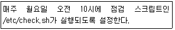
- 10 0 1 * * /etc/check.sh
- 0 10 1 * * /etc/check.sh
- 10 0 * * 1 /etc/check.sh
- 0 10 * * 1 /etc/check.sh
(정답률: 82%)
22. 다음 중 ps 명령으로 동작중인 데몬을 확인할 때 사용하는 옵션으로 알맞은 것은?
- a
- d
- u
- x
(정답률: 41%)
23. ps 명령의 상태 코드 중 작업은 종료되었으나 부모 프로세스로부터 회수되지 않았을 때 나타나는 상태 코드 값으로 알맞은 것은?
- T
- W
- X
- Z
(정답률: 68%)
24. 다음 중 실행 중인 프로세스들의 CPU 사용률을 실시간으로 확인할 때 사용하는 명령으로 알맞은 것은?
- top
- nice
- jobs
- renice
(정답률: 79%)
25. 다음 중 kill 명령 실행 시에 기본적으로 전송되는 시그널 번호로 알맞은 것은?
- 1
- 3
- 9
- 15
(정답률: 58%)
26. 다음 중 프로세스 증가 없이 우선순위를 조정할 때 사용하는 명령으로 알맞은 것은?
- nice
- cron
- nohup
- renice
(정답률: 64%)
27. 다음 중 프로세스의 우선순위 변경을 위해 할당할 수 있는 NI값으로 틀린 것은?
- 20
- 0
- 1
- -20
(정답률: 76%)
28. 다음 중 지정된 시간에 작업을 예약할 때 사용하는 프로그램의 조합으로 알맞은 것은?
- at, inetd
- cron, inetd
- cron, at
- cron, standalone
(정답률: 69%)
29. 다음 중 특징에 따른 에디터의 종류로 알맞은 것은?
- 문법 강조 기능 - vim, pico
- GUI 기반 에디터 - vi, gedit
- 자동 들여쓰기 기능 - nano, vi
- GPL 라이선스 - pico, nano
(정답률: 52%)
30. 다음에서 설명하는 에디터의 종류로 알맞은 것은?
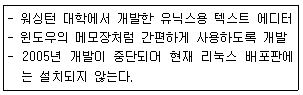
- vi
- pico
- nano
- emacs
(정답률: 72%)
31. 다음 중 ( 괄호 )안에 들어갈 내용으로 알맞은 것은?
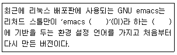
- C
- LISP
- HTML
- FORTEAN
(정답률: 67%)
32. vi 에디터의 치환기능을 이용하여 kait.txt 파일 내 문자열을 치환하려고 한다. 다음 중 vi에서 수행한 치환 명령으로 알맞은 것은?
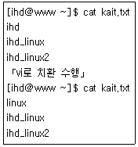
- 1,$s/ihd/linux
- 1,$s/ihd/linux/g
- %s/<ihd>/linux
- %s/\<ihd\>/linux/g
(정답률: 46%)
33. 다음 중 ihd.txt 파일을 열면서 커서를 2번째 줄로 위치시키는 명령으로 알맞은 것은?
- # vi + ihd.txt
- # vi -2 ihd.txt
- # vi +2 ihd.txt
- # vi –c “set nu” 2 ihd.txt
(정답률: 77%)
34. vi 에디터 사용 중 아래와 같은 결과물이 출력 되었다. 다음 중 아래와 같은 결과물이 출력하기 위한 명령으로 알맞은 것은?
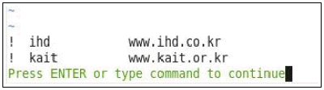
- :ab
- :set
- :map
- :set all
(정답률: 49%)
35. 다음 중 소스 설치 과정에서 configure 작업으로 생성된 다양한 파일을 제거할 때 사용하는 명령으로 알맞은 것은?
- make clear
- make clean
- make remove
- make uninstall
(정답률: 52%)
36. 다음 설명에 해당하는 명령으로 알맞은 것은?
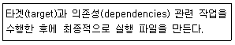
- configure
- make
- make target
- make install
(정답률: 50%)
37. 다음 중 cron 패키지를 환경 설정 파일을 포함해서 전부 제거할 때 사용하는 명령으로 알맞은 것은?
- dpkg -c cron
- dpkg -d cron
- dpkg -r cron
- dpkg -P cron
(정답률: 40%)
38. 다음 중 수세(SUSE) 리눅스에서 사용하는 패키지관리 기법의 조합으로 알맞은 것은?
- yaST, yum
- yaST, zypper
- rpm, yum
- yaST, apt
(정답률: 75%)
39. 다음 중 저장소(repository) 기반 패키지 관리기법으로 틀린 것은?
- yaST
- yum
- zypper
- apt-get
(정답률: 49%)
40. 다음 중 gzip으로 압축된 텍스트 파일의 내용을 확인하는 명령으로 알맞은 것은?
- gcat
- zcat
- lzcat
- ypcat
(정답률: 55%)
41. 다음 중 yum 관련 작업 이력을 출력하는 명령으로 알맞은 것은?
- yum list
- yum check
- yum check-list
- yum history
(정답률: 73%)
42. 다음 중 소스 파일 설치와 관련된 명령으로 틀린 것은?
- make
- cmake
- Makefile
- configure
(정답률: 54%)
43. 다음 중 ( 괄호 )안에 들어갈 내용으로 알맞은 것은?
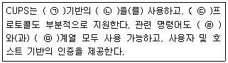
- ㉠ : HTTP, ㉡ : IPP, ㉢ : SMB, ㉣ : BSD, ㉤ : System V
- ㉠ : HTTP, ㉡ : NFS, ㉢ : CIFS, ㉣ : Linux, ㉤ : Windows
- ㉠ : RFC 1179, ㉡ : IPP, ㉢ : SMB, ㉣ : BSD, ㉤ : System V
- ㉠ : RFC 1179, ㉡ : NFS, ㉢ : CIFS, ㉣ : Linux, ㉤ : Windows
(정답률: 59%)
44. 다음 중 ( 괄호 )안에 들어갈 내용으로 틀린 것은?
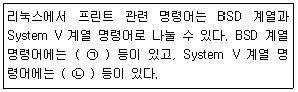
- ㉠ lpr, ㉡ lp
- ㉠ lpc, ㉡ lprm
- ㉠ lpr, ㉡ lpstat
- ㉠ lpc, ㉡ cancel
(정답률: 63%)
45. scanimage 명령어를 사용하여 이미지를 스캔하려고 한다. 다음 중 기본으로 적용되는 이미지 형식으로 알맞은 것은?
- tiff
- jpg
- psd
- pnm
(정답률: 46%)
46. 다음 중 사운드 카드를 제어하는 명령어인 alsactl의 옵션에 대한 설명으로 틀린 것은?
- -E : 환경 변수를 설정한다.
- -f : 환경 설정 파일을 지정한다.
- -i : init을 위한 설정 파일을 지정한다.
- -p : restore와 init 에러를 지정한 파일에 저장한다.
(정답률: 51%)
47. 다음에서 설명하는 주변 장치 인터페이스로 알맞은 것은?
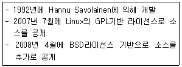
- OSS
- SANE
- ALSA
- CUPS
(정답률: 42%)
48. 다음 중 XSANE 스캐너 프로그램 개발 시 기반이 된 라이브러리로 알맞은 것은?
- Xt
- Qt
- GDK+
- GTK+
(정답률: 47%)
2과목: 리눅스 활용
49. 다음 그림에 해당하는 프로그램으로 알맞은 것은?
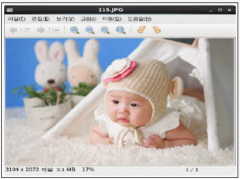
- eog
- Totem
- Okular
- ImageMagicK
(정답률: 68%)
50. 다음 중 GNOME과 가장 관련 있는 라이브러리로 알맞은 것은?
- Qt
- GTK+
- Mutter
- Metacity
(정답률: 67%)
51. 다음 중 이미지 편집, 변환, 생성 프로그램으로 알맞은 것은?
- GIMP
- Gwenview
- Dolphin
- Okular
(정답률: 70%)
52. 다음 중 리눅스에서 사용되는 X Window System을 초기부터 최근 순으로 알맞은 것은?
- Wayland → X.org Server → XFree86
- Wayland → XFree86 → X.org Server
- XFree86 → X.org Server → Wayland
- X.org Server → XFree86 → Wayland
(정답률: 54%)
53. 다음 중 X 서버에 가까운 가장 저수준의 X 클라이언트 라이브러리로 알맞은 것은?
- Qt
- XCB
- GTK+
- FLTK
(정답률: 69%)
54. 다음 설명에 해당하는 내용으로 알맞은 것은?
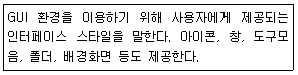
- 윈도 매니저
- 디스플레이 매니저
- 데스크톱 환경
- 파일관리자
(정답률: 49%)
55. 다음 ( 괄호 ) 안에 들어갈 내용으로 알맞은 것은?
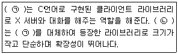
- ㉠ Qt, ㉡ GTK+
- ㉠ GTK+, ㉡ Qt
- ㉠ XCB, ㉡ Xlib
- ㉠ Xlib, ㉡ XCB
(정답률: 53%)
56. 다음 중 X 윈도 관련 프로그램의 종류가 나머지 셋과 다른 것은?
- Kwin
- Xfce
- Windowmaker
- Afterstep
(정답률: 42%)
57. 다음 중 할당받은 C 클래스 네트워크 주소 대역에서 서브넷마스크를 255.255.255.192로 설정했을 경우에 사용 가능한 호스트 IP 주소 개수로 알맞은 것은?
- 61
- 62
- 63
- 64
(정답률: 61%)
58. 다음 설명에 해당하는 인터넷 서비스로 알맞은 것은?
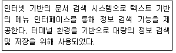
- WWW
- SAMBA
- TELNET
- GOPHER
(정답률: 58%)
59. 다음 설명에 해당하는 것은?
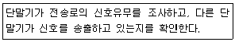
- PSDN
- PSTN
- CSMA/CD
- Frame Relay
(정답률: 77%)
60. 다음 설명에 해당하는 것은?
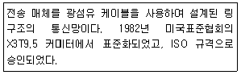
- X.25
- ATM
- DQDB
- FDDI
(정답률: 57%)
61. 다음 설명과 같은 경우에 구축해야할 인터넷 서비스로 가장 알맞은 것은?
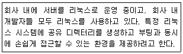
- NFS
- Usenet
- SAMBA
- TELNET
(정답률: 69%)
62. 다음 중 패킷 교환방식의 특징으로 가장 알맞은 것은?
- 안정적인 데이터 전송률을 지원한다.
- 고정된 대역폭을 할당 받아서 전송된다.
- 이론상 호스트의 무제한 수용이 가능하다.
- 송수신 호스트간의 경로가 결정되기 때문에 모든 데이터는 같은 경로로 전달된다.
(정답률: 57%)
63. 다음 중 네트워크 인터페이스 카드의 작동을 중지시키는 명령으로 알맞은 것은?
- ifconfig eth0 no
- ifconfig eth0 off
- ifconfig eth0 down
- ifconfig eth0 stop
(정답률: 73%)
64. 다음 중 로컬 시스템에 장착된 이더넷 카드의 MAC 주소를 확인할 때 사용하는 명령으로 알맞은 것은?
- arp
- hosts
- route
- ifconfig
(정답률: 53%)
65. 다음 IPv4의 C 클래스 대역에 할당된 사설 IP 주소의 네트워크 개수로 알맞은 것은?
- 1
- 16
- 192
- 256
(정답률: 52%)
66. 다음 중 이동통신 분야의 5G 제정과 관련된 국제기구로 알맞은 것은?
- ISO
- EIA
- ITU
- IEEE
(정답률: 50%)
67. 다음 중 OSI 7계층의 세션 계층에 대한 설명으로 알맞은 것은?
- 데이터의 암호화와 해독을 수행
- 송신 프로세스와 수신 프로세스간의 연결 기능을 제공
- 코드와 문자 등을 번역하여 일관되게 데이터를 서로 이해할 수 있는 기능 제공
- 응용 프로그램 간의 통신을 관리하기 위한 방법과 동기화를 유지하는 서비스를 제공
(정답률: 53%)
68. 다음 중 IP 주소 및 포트 번호와 관련 있는 기구로 알맞은 것은?
- ISO
- IEEE
- IANA
- ANSI
(정답률: 48%)
69. 다음 설명과 같은 경우에 구축해야할 인터넷 서비스로 가장 알맞은 것은?
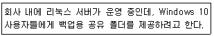
- NFS
- SAMBA
- TELNET
- GOPHER
(정답률: 66%)
70. 다음 중 삼바 서비스 구성과 관련해서 가장 거리가 먼 것은?
- RPC
- SMB
- CIFS
- NetBIOS
(정답률: 48%)
71. 다음 중 메일 서버 간의 메시지 교환을 위해 사용되는 프로토콜로 알맞은 것은?
- POP3
- IMAP
- SMTP
- SNMP
(정답률: 75%)
72. 다음 설명에 해당하는 웹 브라우저로 알맞은 것은?
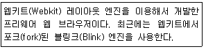
- 크롬
- 사파리
- 오페라
- 파이어폭스
(정답률: 56%)
73. 다음 중 시스템 간의 파일을 주고받는 서비스로 가장 거리가 먼 것은?
- SSH
- FTP
- NFS
- TELNET
(정답률: 48%)
74. 다음 설명에 해당하는 네트워크 장치 명으로 알맞은 것은?
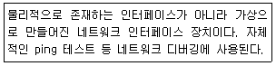
- lo
- eth0
- virbr0
- docker0
(정답률: 46%)
75. 다음 중 로컬 루프백(Local Loopback) 장치에 할당되는 IP 주소로 알맞은 것은?
- 10.0.2.15
- 127.0.0.1
- 171.16.0.1
- 192.168.0.2
(정답률: 79%)
76. 다음 중 시스템에서 사용할 DNS 서버의 주소를 등록하는 파일로 알맞은 것은?
- /etc/hosts
- /etc/resolv.conf
- /etc/sysconfig/network
- /etc/sysconfig/network-scripts
(정답률: 63%)
77. 다음 설명에 해당하는 기술로 가장 알맞은 것은?
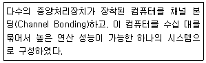
- 병렬 컴퓨터
- 고가용성 클러스터
- 부하분산 클러스터
- 임베디드 시스템
(정답률: 51%)
78. 다음 중 리눅스 커널 기반의 운영체제로 알맞은 것은?
- webOS
- QNX
- iOS
- BlackBerry OS
(정답률: 56%)
79. 다음 설명에 해당하는 클러스터링 기술 조합으로 가장 알맞은 것은?
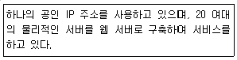
- 고계산용 클러스터와 고가용성 클러스터
- 고가용성 클러스터와 고성능 클러스터
- 부하분산 클러스터와 고가용성 클러스터
- 부하분산 클러스터와 고성능 클러스터
(정답률: 63%)
80. 다음 중 VirtualBox에 대한 설명으로 틀린 것은?
- 라이선스는 GNU GPL를 따른다.
- VMware의 VMDK 이미지를 지원한다.
- 인텔 및 AMD 기반의 반가상화를 지원한다.
- Microsoft Virtual PC 이미지인 VHD를 지원한다.
(정답률: 54%)
설정된 umask 값이 0022일 때, 파일 생성 시 기본 허가권 값은 0666(모든 사용자에게 읽기와 쓰기 권한이 있는 파일)에서 umask 값(0022)을 뺀 0644(소유자는 읽기와 쓰기 권한, 그 외 사용자는 읽기 권한만 있는 파일)가 된다. 따라서, "-rw-r--r--"이 알맞은 답이다.